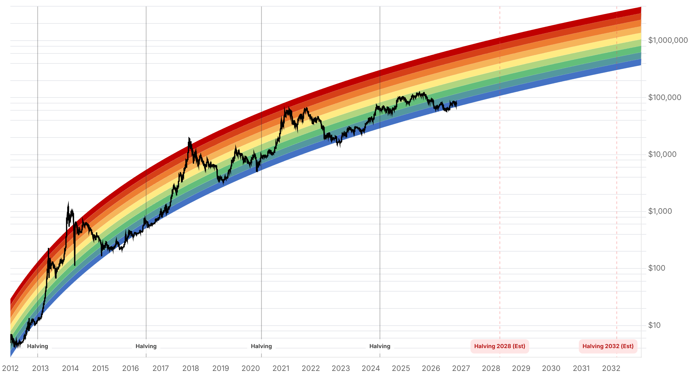

Reporte financiero
BTC cotiza en vivo a USD 75.905,61 (07:15 UTC, +0,22% intradía vs. cierre previo de USD 75.741,02) -prácticamente sin cambios frente al cierre de ayer (USD 75.746,93) y apenas por encima del cierre del jueves (USD 75.942,13)-, en un fin de semana tranquilo en precio tras dos días de desplome. Lo nuevo y clave: mientras BTC se estabilizó, Wall Street sí rebotó con fuerza el viernes 6 de noviembre -el día posterior al crac del jueves que ya se cubrió ayer-: el Nasdaq Composite cerró en 24.579,42 (+1,09%), el Nasdaq-100 en 26.989,99 (+1,35%) y el S&P 500 en 7.376,86 (+0,31%), recortando la pérdida semanal del S&P a ~2,7%; el Dow fue la excepción, con -0,46% (51.285,73, -237,33 puntos). Nvidia subió 2,78% a ~USD 186,64, recuperando cerca de un 27% de la caída del 9,26% del jueves. Pero Bitcoin no participó del rebote -una divergencia que es el dato más relevante del día-: según el newsletter Closing Look (vía Substack, 6 nov), el detonante del repunte bursátil fue un reporte de nóminas no agrícolas de octubre muy por encima de lo esperado (+165.000 vs. +59.000 esperados, desempleo cayendo a 4,1% desde 4,2%), que according to ese mismo reporte elevó a ~78% (estilo Polymarket) la probabilidad de que la Fed suba tasas 25 puntos base en diciembre en lugar de recortarlas -una lectura que, de confirmarse con más fuentes, sería un cambio de régimen macro relevante para activos de riesgo, pero que por ahora solo tiene esta fuente y debe tomarse con cautela-. En simultáneo, los ETFs spot de Bitcoin tuvieron su segundo día consecutivo de salidas netas el 6 de noviembre: -USD 411,92M (SoSoValue), con el IBIT de BlackRock aportando -USD 403M y el FBTC de Fidelity como el único fondo con entradas (+USD 42,82M); el streak de salidas del IBIT llegó a cinco sesiones consecutivas y más de USD 1.000M retirados desde el 30 de octubre (Cointelegraph). El acumulado de dos días (5-6 nov) asciende a -USD 842,12M. El Fear & Greed Index siguió cayendo -de 28 (Fear) ayer a 25 (Extreme Fear) hoy-, cruzando a la categoría más baja de la escala mientras el precio se mantenía estable: la fe cripto se deteriora más rápido que el precio, una divergencia sentimiento-precio digna de seguimiento. Técnicamente, BTC sigue pegado a su media móvil de 50 semanas (~USD 75.733, cifra de ayer) -el cierre semanal de la vela cripto (domingo 00:00 UTC) es inminente y es el punto de observación técnico más importante del fin de semana: un cierre por encima confirmaría que el soporte se sostiene, uno por debajo reforzaría la señal de debilidad estructural que ya señalaba el reporte de ayer-. Sin novedades verificadas desde ayer en: la decisión de MSCI sobre Strategy (pendiente para el 11 de noviembre), el estado de la Clarity Act (sigue estancada desde el impasse demócrata de septiembre, sin desarrollos de noviembre encontrados), la vulnerabilidad de BTCPay Server, el lavado de los fondos del hackeo de Binance (Chainalysis reportó a inicios de noviembre que el flujo se desplazó de Tron a Solana, sin actualización nueva hoy), la apelación del Reino Unido sobre los 61.000 BTC y la respuesta de Cantor Fitzgerald al senador Blumenthal.
El 6 de noviembre, un día después del crac del jueves (ya cubierto en el reporte de ayer), el Nasdaq Composite cerró en 24.579,42 (+1,09%), el Nasdaq-100 en 26.989,99 (+1,35%) y el S&P 500 en 7.376,86 (+0,31%), recortando la pérdida semanal del S&P a ~2,7% (Closing Look, vía Substack, 6 nov). El Dow fue la excepción y cerró en rojo: 51.285,73 (-0,46%, -237,33 puntos). Nvidia subió 2,78% a ~USD 186,64, recuperando cerca de un 27% de su caída del 9,26% del jueves (StockTitan/MarketAlleys, 6 nov). Pese a este rebote generalizado en activos de riesgo, BTC cerró el viernes prácticamente plano en USD 75.746,93 y cotiza hoy en vivo a USD 75.905,61 (+0,22% intradía) -sin participar del repunte bursátil-, rompiendo (al menos por un día) la correlación BTC-Nasdaq de 0,41 que Foundry Labs había medido y que se citó en el reporte de ayer como explicación del desplome conjunto.
Según el newsletter Closing Look (vía Substack, 6 nov), las nóminas no agrícolas de octubre subieron 165.000 puestos frente a 59.000 esperados, y el desempleo cayó a 4,1% desde 4,2%. Esa misma fuente reporta que mercados de pronóstico estilo Polymarket movieron a ~78% la probabilidad de una suba de 25 puntos base de la Fed en diciembre -en lugar de un recorte-. Esta cifra concreta de probabilidad no pudo corroborarse con una segunda fuente independiente en esta investigación, por lo que se reporta aquí con esa salvedad explícita: de confirmarse en los próximos días con fuentes como CME FedWatch, sería un cambio de régimen macro relevante (tasas más altas por más tiempo) para todos los activos de riesgo, Bitcoin incluido, y debería re-evaluarse en el próximo reporte.
El 6 de noviembre los ETFs spot de Bitcoin registraron -USD 411,92M en salidas netas (SoSoValue/TokenPost), el segundo día consecutivo de salidas tras los -USD 430,2M del 5 de noviembre (total de dos días: -USD 842,12M). El IBIT de BlackRock lideró con -USD 403M, mientras que el FBTC de Fidelity fue el único fondo con entradas (+USD 42,82M); BITB (Bitwise) y ARKB (ARK 21Shares) restaron -USD 20,55M y -USD 20,09M respectivamente, y el GBTC de Grayscale -USD 11,11M. Cointelegraph señala que el streak de salidas del IBIT alcanzó cinco sesiones consecutivas, con más de USD 1.000M retirados desde el 30 de octubre. El acumulado histórico de los ETFs spot de BTC se mantiene en ~USD 55.700M de entradas netas, con activos totales de ~USD 95.900M (~6,28% de la capitalización de mercado de Bitcoin).
El índice de sentimiento cripto (alternative.me) bajó de 28 (Fear) ayer a 25 (Extreme Fear) hoy, cruzando a la categoría más baja de la escala justo cuando el precio dejó de caer y se mantuvo prácticamente plano frente al cierre de ayer. Esta desconexión entre sentimiento (cada vez más temeroso) y precio (estable) sugiere que el miedo acumulado de los dos días previos de desplome todavía no se revierte, aunque el detonante original (el selloff de Wall Street centrado en IA) ya empezó a corregirse en las acciones. Técnicamente, BTC sigue pegado a su media móvil de 50 semanas (~USD 75.733, cifra de ayer) justo cuando se acerca el cierre de la vela semanal cripto (domingo 00:00 UTC) -el punto de observación técnico más importante del fin de semana.
La decisión de MSCI sobre si excluir a Strategy de sus índices sigue pendiente para el 11 de noviembre, sin novedades encontradas hoy. La Clarity Act permanece estancada desde el impasse de un grupo de senadores demócratas en septiembre (centrado en objeciones éticas sobre los intereses cripto de la familia Trump); no se hallaron desarrollos legislativos de noviembre. Tampoco hay actualizaciones nuevas sobre la vulnerabilidad de BTCPay Server, sobre el lavado de los fondos del hackeo de Binance (Chainalysis reportó a inicios de noviembre que la actividad se desplazó de Tron hacia Solana, sin novedad adicional hoy), sobre la apelación del Reino Unido respecto a los 61.000 BTC (sigue proyectada para 2027) ni sobre la respuesta de Cantor Fitzgerald al requerimiento del senador Blumenthal -todos temas ya cubiertos en reportes anteriores.
| Periodo | Valor |
|---|---|
| 1 nov | 78248.45 |
| 2 nov | 76677.3 |
| 3 nov | 77345.05 |
| 4 nov | 80405.29 |
| 5 nov | 75942.13 |
| 6 nov | 75746.93 |
| 7 nov (en vivo) | 75905.61 |
| Periodo | Valor |
|---|---|
| Hoy | 25 |

“I expect Nasdaq to bottom tomorrow. The same for Bitcoin, potentially after sweeping $75,000.”
“The global financial crisis wasn't caused by Democrats taking Congress.”
El punto de observación inmediato es el cierre de la vela semanal cripto (domingo 00:00 UTC), con BTC pegado a su media móvil de 50 semanas (~USD 75.733). Un cierre por encima preservaría la lectura de soporte técnico; uno por debajo confirmaría la señal de debilidad estructural que ya se señaló ayer. En paralelo, la divergencia de hoy -Wall Street rebotando con fuerza mientras BTC se mantiene plano- es la variable a vigilar el lunes: si la correlación BTC-Nasdaq (0,41 a 63 días, Foundry Labs) se reafirma, un lunes alcista en acciones podría finalmente arrastrar a BTC al alza; si la divergencia persiste, sugeriría que el mercado cripto está digiriendo su propio problema de sentimiento (Extreme Fear) independientemente de las acciones.
La cifra de probabilidad de una suba de tasas de la Fed en diciembre (~78% según una sola fuente, Closing Look) es, de confirmarse, el nuevo frente de riesgo macro más relevante a vigilar en los próximos reportes -un giro hacia tasas más altas golpearía tanto a acciones de IA como a Bitcoin, revirtiendo el supuesto de fondo de varios de los objetivos de precio de largo plazo ya reportados. Sigue sin resolverse la pausa en inversión de infraestructura de IA que describió J.P. Morgan (reportada ayer), la decisión de MSCI sobre Strategy (11 de noviembre) y el estancamiento de la Clarity Act desde septiembre. El streak de cinco sesiones de salidas del IBIT (>USD 1.000M desde el 30 de octubre) es una señal de desinversión institucional sostenida que contrasta con la narrativa de 'un solo día de salida/entrada' que se señaló ayer -vale la pena seguir monitoreando si se revierte o se profundiza.
Sin cambios en los objetivos de precio de largo plazo ya reportados en ediciones anteriores (Citigroup, Bernstein, Standard Chartered, Tom Lee, NYDIG, Armstrong, piso de costo de producción de JPMorgan en USD 94.000). BTC sigue muy por debajo de su máximo de 52 semanas de USD 107.428. El paralelismo de Rekt Capital con mayo-junio de 2026 (reportado ayer) sigue vigente como recordatorio de que las reversiones post-rally pueden ser rápidas y profundas en este ciclo.
Con el precio pegado a ~USD 75.733-75.900, el cierre semanal es la confirmación técnica más próxima: por encima sostiene la lectura de soporte, por debajo refuerza la señal de debilidad estructural señalada ayer. Actuar antes de ese cierre expone a quedar atrapado en cualquiera de los dos sentidos de un movimiento todavía no resuelto.
Nasdaq y S&P 500 cerraron al alza el 6 de noviembre, pero BTC se mantuvo plano y los ETFs spot tuvieron su segundo día consecutivo de salidas netas (con el streak del IBIT llegando a cinco sesiones). Esta divergencia sugiere que, al menos por ahora, el mercado cripto no está validando el optimismo bursátil -extrapolar una correlación mecánica BTC-Nasdaq en este momento específico sería prematuro.
Esta cifra proviene de un solo newsletter (Closing Look, vía Substack) y no pudo confirmarse de forma independiente con CME FedWatch ni con otra fuente en esta investigación. Si se confirma en los próximos días, sería un cambio de régimen macro de alto impacto para todos los activos de riesgo; si no se confirma, podría tratarse de una cifra de un mercado de pronóstico de baja liquidez no representativa del consenso. Monitorear fuentes primarias (CME FedWatch, actas de la Fed) antes de actuar sobre esta base.